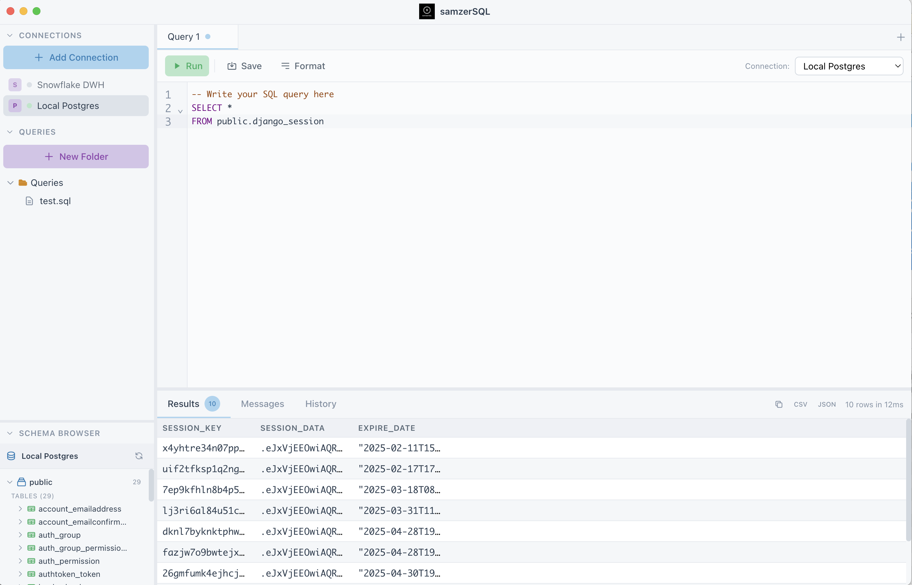

A clean, minimalistic SQL client for Snowflake, MySQL, PostgreSQL, and Salesforce
Download for macOSFree and open source

Connect to Snowflake, MySQL, PostgreSQL, and Salesforce (SOQL) with a unified interface.
Write queries with full syntax highlighting powered by CodeMirror.
Browse databases, schemas, tables, and columns with lazy loading for fast performance.
Smart suggestions based on your schema, including tables, columns, and SQL keywords.
Access and manage your query history with easy search and re-execution.
Export query results to CSV or JSON format with a single click.